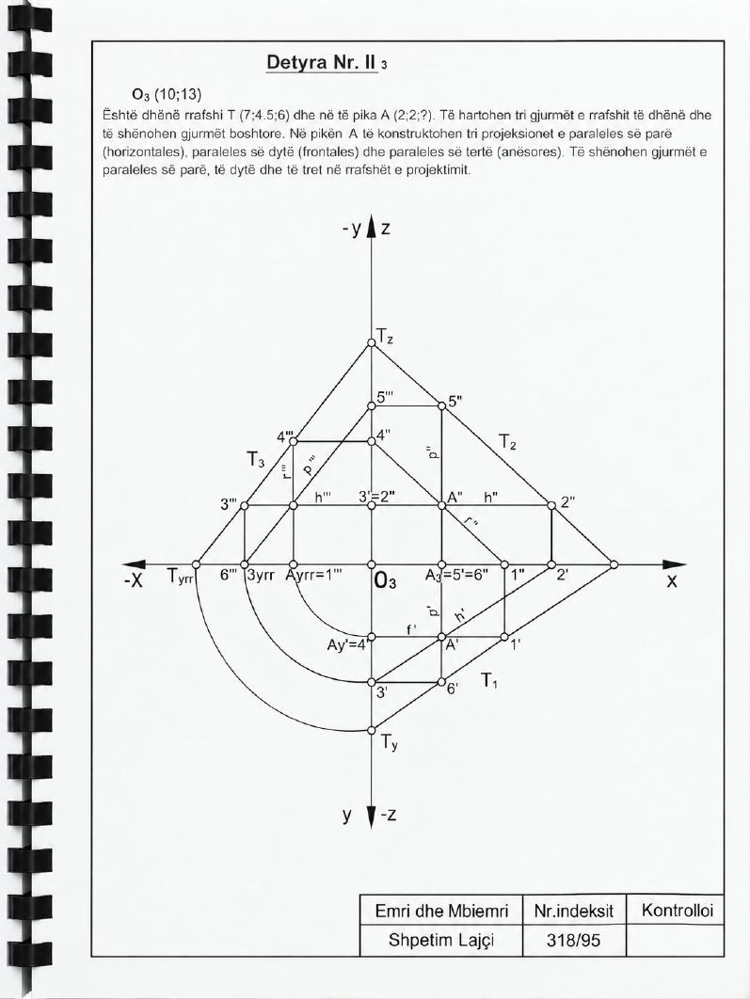

Animacioni
▶
Animacioni për këtë detyrë është në përgatitje.
Ndërkohë shiko zgjidhjen nga libri më poshtë.
Faqet e librit


Gjurmët e rrafshit T dhe paralelet nëpër pikën A
Është dhënë rrafshi T dhe në të pika A. Të hartohen tri gjurmët e rrafshit dhe të shënohen gjurmët boshtore. Në pikën A të konstruktohen tri projeksionet e paraleles së parë (horizontales), së dytë (frontales) dhe së tretë (anësores), dhe të shënohen gjurmët e tyre në rrafshet e projektimit.
Të dhënat: O₃ (10; 13); T (7; 4,5; 6); A (2; 2; ?)
Animacioni për këtë detyrë është në përgatitje.
Ndërkohë shiko zgjidhjen nga libri më poshtë.
